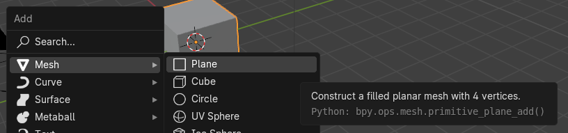
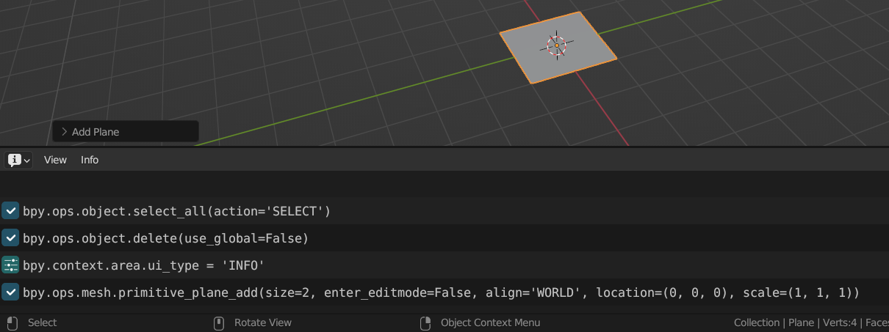

The 10,000 foot view¶
Introduction¶
The Blender Python API mostly consists of a thin layer on top of the underlying Blender C/C++ data structures and methods. The underlying C/C++ code is used for automatically generating the Python API during the build process of the Blender executable, which means the API is always up-to-date with respect to the underlying code.
The user-facing Python API isn't the only part of Blender that uses Python. Large parts of the user interface, most import/export functionality and all add-ons are written in Python. It is therefore relatively easy to extend Blender with, say, new UI dialogs or a custom importer. This is one of the strengths of the Blender Python API.
Some things to be aware of:
- Blender 4.1 embeds the Python 3.11 interpreter.
- You can access the online API documentation from within Blender with
Help > Python API Reference - Starting Blender from the console will allow you to see important outputs channels (warnings, exceptions, output of
print()statements, etc).
The earlier chapter on the Python API provides a hands-on introduction, including basic information on how to execute Python scripts in Blender.
Be careful
Since the API provides access to Blender internals at a very low level you can screw up the Blender state, causing unexpected behaviour, data corruption or even crashes. In the worst case you can end up with a file that will no longer load in Blender at all, although that's rare.
So when working with Python scripting, save your session to file often, preferably in a number of incremental versions, so you can recover or go a step back when needed.
In cases where you suspect Blender's current internal state has been corrupted you can save the current state to a temporary file, start a second instance of Blender (keeping the first Blender running!) and then open the temporary file in the second instance to help ensure you can start from a known-good state. This prevents you from saving a corrupt Blender state and overwriting your last known-good file.
API modules¶
The Blender Python API is comprised of several modules, with bpy being the main one. But there's also useful routines in mathutils, bmesh and a few others.
Accessing API reference documentation
The API documentation on these modules can be easily accessed from within Blender using Help > Python API Reference.
No modules loaded by default
By default none of the API modules, not even bpy, are loaded in the environment where a script file runs, so you need to import the ones you need explicitly.
The Python Console does import quite a few things by default and also sets some useful variables, like C to access bpy.context and D to access bpy.data with less typing:
PYTHON INTERACTIVE CONSOLE 3.11.7 (main, Feb 7 2024, 17:07:03) [GCC 11.2.1 20220127 (Red Hat 11.2.1-9)]
Builtin Modules: bpy, bpy.data, bpy.ops, bpy.props, bpy.types, bpy.context, bpy.utils, bgl, gpu, blf, mathutils
Convenience Imports: from mathutils import *; from math import *
Convenience Variables: C = bpy.context, D = bpy.data
>>> D.objects.values()
[bpy.data.objects['Camera'], bpy.data.objects['Cube'], bpy.data.objects['Light']]
>>> C.active_object
bpy.data.objects['Cube']
Developer settings¶
When developing Python scripts in Blender it can be useful to enable a few extra settings:
- The Python Tooltips under
Interface > Display > Python Tooltips. When enabled a tooltip will show the corresponding Python command or a path to the data for a UI element.  - The Developer Extras under
Interface > Display > Developer Extras. When enabled this provides multiple things:- The 3D viewport overlay for a mesh in edit mode will now have an extra setting
Indicesto show the low-level indices of selected vertices/edges/faces. This can be very useful when debugging Python code that works on mesh geometry. - The right-click menu for a UI item, such as a button or menu entry, will now also contain an entry called
Online Python Referencelinking to the relevant Python documentation page. - It will enable Operator Search, which will add entries to the
F3search menu for operators. These will be listed after the regular menu entries in the search results. - It adds a new menu option
Help > Operator Cheat Sheetthat will create a new text area calledOperatorList.txt, which contains all available operators (see Operators) and their default parameters. This list can give you a quick overview of the available operators, with the API documentation providing all the details.
- The 3D viewport overlay for a mesh in edit mode will now have an extra setting
Info area¶
As mentioned in the video in the introductory chapter the Info area can be useful if you want to inspect which Python calls Blender performs for certain operations. This certainly will not provide all the details in all cases, but can give some insight. You can either switch to the default Scripting workspace (using the tabs at the top of the window) to check the output, or use the normal UI area operations to add/change an area to an Info area. The latter is shown below:

Sources of examples¶
This chapter provides small snippets of code and serves mostly as a reference. Sometimes it can be useful to get more information or examples of how specific parts of the Blender Python API are used. Some good sources for other code are:
- The add-ons included with Blender show many uses of the Python API. They can be found in the directory
<blender-version>/scripts/addonsin the Blender distribution directory. - A number of script templates are also included, in
<blender-version>/scripts/templates_py, mostly examples of defining custom operators or UI elements.
Data-blocks¶
The different types of data in Blender are stored in data-blocks. For example, there's Mesh, Object, Texture and Shader data-blocks, but there's quite a few more. One of the clever bits in the way Blender is programmed is that data-blocks written to file contain enough information about their content (i.e. metadata) to make them readable by both older and newer versions of Blender than the one they were written with. This metadata system also makes it possible to automatically provide the Python API for accessing those data-blocks without much manual work from Blender's developers.
Data-blocks are available through Python, per type, under bpy.data. For example, there's bpy.data.objects and bpy.data.meshes. The type of a data-block is the corresponding class under bpy.types:
>>> type(bpy.data.objects['Cube'])
<class 'bpy_types.Object'>
>>> bpy.types.Object
<class 'bpy_types.Object'>
Each type of data-block has its own set of attributes and methods, particular to that type. Learning the Blender Python API involves getting to know the details of the data-block types you want to work with and how they interact.
Automatic data-block garbage collection
Blender keeps track of which data-blocks are no longer being referenced to decide when a data-block does not need to be saved (so-called garbage collection). Usually you don't need to explicitly interact with this system, but it is good to be aware that it is there, see this section for more details.
Unique data-block names¶
Per type of data all the data-blocks need to have a unique name. This is enforced automatically by Blender when a data-block is created by appending a number to make the name unique. For example:
>>> bpy.data.meshes.new('my object')
bpy.data.meshes['my object']
>>> bpy.data.meshes.new('my object')
bpy.data.meshes['my object.001']
>>> bpy.data.meshes.new('my object')
bpy.data.meshes['my object.002']
This usually isn't an issue, but just something to be aware of when working with referencing objects by name, as the name of a data-block you created might sometimes actually be different than you expect.
Objects and object data¶
When we use the word "Object" in these pages we mean one of the object types that can be present in a 3D scene, for example a camera, mesh or light. Such objects are of type bpy.types.Object and all have general properties related to their presence in the 3D scene. For example, their name, 3D transformation, visibility flags, parent, etc.
But a Light object needs to specify different properties than, say, a Camera object and these per-type properties are stored as "object data". The object data can be accessed through the data attribute of an Object:
# Both lights and cameras are Objects
>>> type(bpy.data.objects['Light'])
<class 'bpy_types.Object'>
>>> type(bpy.data.objects['Camera'])
<class 'bpy_types.Object'>
# But their object data are of a different type
>>> type(bpy.data.objects['Camera'].data)
<class 'bpy.types.Camera'>
>>> type(bpy.data.objects['Light'].data)
<class 'bpy.types.PointLight'>
# And have different attributes, relevant to that type
>>> dir(bpy.data.objects['Camera'].data)
[..., 'angle', ..., 'clip_start', ..., 'dof', ...]
>>> dir(bpy.data.objects['Light'].data)
[..., 'color', ..., 'cutoff_distance', ..., 'energy', ...]
Objects of a specific type¶
Sometimes you want to iterate over all objects in a scene, but only perform some operation on a specific type of object. You can use the type attribute for checking an object's type:
>>> bpy.data.objects['Camera'].type
'CAMERA'
>>> bpy.data.objects['Light'].type
'LIGHT'
>>> for obj in bpy.data.objects:
if obj.type == 'MESH':
# Do something
...
Native Blender data structures¶
When working with the Python API will you frequently use internal Blender types that appear similar to regular Python types, like lists and dictionaries. However, the Blender types are not real native Python types and behave differently in certain aspects.
For example, the different collections of scene elements, such as objects or meshes, that are available under bpy.data are of type bpy_prop_collection. This type is a combination of the Python list and dictionary types, sometimes called an ordered dictionary, as it allows indexing by both array position as well as key:
>>> type(bpy.data.objects)
<class 'bpy_prop_collection'>
# Some of its methods match those of native Python data types
>>> dir(bpy.data.objects)
['__bool__', '__contains__', '__delattr__', '__delitem__', '__doc__',
'__doc__', '__getattribute__', '__getitem__', '__iter__', '__len__',
'__module__', '__setattr__', '__setitem__', '__slots__', 'bl_rna',
'find', 'foreach_get', 'foreach_set', 'get', 'items', 'keys', 'new',
'remove', 'rna_type', 'tag', 'values']
# Index by position
>>> bpy.data.objects[0]
bpy.data.objects['Camera']
# Index by key
>>> bpy.data.objects['Camera']
bpy.data.objects['Camera']
# (key, value) pairs
>>> bpy.data.objects.items()
[('Camera', bpy.data.objects['Camera']), ('Cube', bpy.data.objects['Cube']),
('Light', bpy.data.objects['Light'])]
Note that the position of an item in the collection, and hence its index, can change during a Blender session.
Inspecting values¶
One of the more annoying aspects when working in the Blender Python Console inspecting these kinds of values is that the elements in a bpy_prop_collection (or other Blender types) aren't printed by default, this in contrast to a regular Python dictionary. You need to, for example, cast to a list or call its values() method:
# Regular Python dict, prints both keys and values
>>> d = dict(a=1, b=2, c=3)
>>> d
{'a': 1, 'b': 2, 'c': 3}
# No items printed
>>> bpy.data.objects
<bpy_collection[3], BlendDataObjects>
# values() returns a list, so gets printed in detail
>>> type(bpy.data.objects.values())
<class 'list'>
>>> bpy.data.objects.values()
[bpy.data.objects['Camera'], bpy.data.objects['Cube'], bpy.data.objects['Light']]
# Difference in list() result:
>>> list(d)
['a', 'b', 'c']
# Returns dict *keys*
>>> list(bpy.data.objects)
[bpy.data.objects['Camera'], bpy.data.objects['Cube'], bpy.data.objects['Light']]
# Returns collection *values*
The choice for not printing the values inside a bpy_prop_collection is (most likely) that in many cases the collection will contain large numbers of objects, so printing them all would not be too useful, or might even make the UI non-responsive for a short time.
Data organization¶
In certain cases Blender uses a more elaborate data structure where you might except low-level values, like lists. For example, the set of vertices that make up a mesh are only accessible as a collection of MeshVertex objects:
>>> m
bpy.data.meshes['Cube']
>>> type(m.vertices)
<class 'bpy_prop_collection'>
>>> len(m.vertices)
8
>>> m.vertices[0]
bpy.data.meshes['Cube'].vertices[0]
>>> type(m.vertices[0])
<class 'bpy.types.MeshVertex'>
>>> dir(m.vertices[0])
['__doc__', '__module__', '__slots__', 'bl_rna', 'co', 'groups',
'hide', 'index', 'normal', 'rna_type', 'select', 'undeformed_co']
# Vertex coordinate (object space)
>>> m.vertices[0].co
Vector((1.0, 1.0, 1.0))
# Vertex normal
>>> m.vertices[0].normal
Vector((0.5773491859436035, 0.5773491859436035, 0.5773491859436035))
The reason for this is that there's several types of data associated with a single vertex, which are all centralized in a MeshVertex object. In short, Blender uses a so-called array-of-structs design. The alternative design choice would have been to have separate arrays for vertex coordinates, vertex normals, etc (which would be a struct-of-arrays design).
Vertices and matrices¶
The example above also shows that even a vertex coordinate is not accessed as a low-level Python data type, like a tuple, but by the Vector type (which is in the mathutils module). This has the advantage of providing many useful methods for operating on vector values:
>>> v = m.vertices[0].normal
>>> v
Vector((0.5773491859436035, 0.5773491859436035, 0.5773491859436035))
>>> v.length
0.999998137353116
# Return a new vector that's orthogonal to v
>>> w = v.orthogonal()
>>> w
Vector((0.5773491859436035, 0.5773491859436035, -1.154698371887207))
# Dot product (should be zero as v and w are orthogonal)
>>> v.dot(w)
0.0
# Note: v*w is element-wise product, not dot product!
>>> v*w
Vector((0.3333320915699005, 0.3333320915699005, -0.666664183139801))
# Cross product between two vectors
>>> v.cross(w)
Vector((-0.9999963045120239, 0.9999963045120239, 0.0))
# Swizzling (returning vector elements in a different order)
>>> w
Vector((0.5773491859436035, 0.5773491859436035, -1.154698371887207))
>>> w.zxy
Vector((-1.154698371887207, 0.5773491859436035, 0.5773491859436035))
The builtin mathutils module contains many useful data types and methods for working with 3D data, including vectors and matrices, but also different methods for working with transformations (like quaternion) and colors spaces.
# Transformation matrix for an object with uniform scale 2 and
# translation in Z of 3. These values will match with the Transform UI area
>>> o
bpy.data.objects['Cube']
>>> o.matrix_world
Matrix(((2.0, 0.0, 0.0, 0.0),
(0.0, 2.0, 0.0, 0.0),
(0.0, 0.0, 2.0, 3.0),
(0.0, 0.0, 0.0, 1.0)))
# Create a rotation matrix
>>> m = Matrix.Rotation(radians(90.0), 4, 'X')
>>> m
Matrix(((1.0, 0.0, 0.0, 0.0),
(0.0, 7.549790126404332e-08, -1.0, 0.0),
(0.0, 1.0, 7.549790126404332e-08, 0.0),
(0.0, 0.0, 0.0, 1.0)))
>>> v = Vector((1,2,3))
# Transform the vector using the matrix. Note the different outcomes
# depending on the multiplication order.
>>> m @ v
Vector((1.0, -2.999999761581421, 2.000000238418579))
>>> v @ m
Vector((1.0, 3.000000238418579, -1.999999761581421))
# Also, a 3-vector is assumed to have a fourth element equal to *one* when
# multiplying with a matrix:
>>> m = Matrix.Translation((4, 5, 6))
>>> m
Matrix(((1.0, 0.0, 0.0, 4.0),
(0.0, 1.0, 0.0, 5.0),
(0.0, 0.0, 1.0, 6.0),
(0.0, 0.0, 0.0, 1.0)))
>>> m @ Vector((1, 2, 3))
Vector((5.0, 7.0, 9.0))
>>> m @ Vector((1, 2, 3, 0))
Vector((1.0, 2.0, 3.0, 0.0))
API quirks¶
Working with the Blender Python API has some peculiarities compared to your average Python scripting. These have to do with the way the API is structured, but also how it interacts with the Blender internals. The API manual contains a lengthy page on some gotchas, but here we list some of the common ones.
Object interaction modes¶
An object is always in one of several interaction modes. These modes are the same ones you work with in the UI: Object mode, Edit mode, etc. The current mode for an object can be retrieved through the mode property:
Depending on the current mode of a mesh object certain data might not be up-to-date, or even unavailable, when accessing it through the Python API. This is especially true when an object is in Edit Mode.
This is because the edit mode uses its own copy of the data to let you edit, which is synced with the underlying mesh data when going in and out of edit mode. See here for the relevant section in the Blender API docs.
An example continuing with the Cube mesh above:
>>> o.mode
'OBJECT'
>>> m = o.data
>>> m
bpy.data.meshes['Cube']
# Check UV map data
>>> len(m.uv_layers[0].data)
24
# <enter edit mode in the UI with TAB>
>>> o.mode
'EDIT'
# UV map data now empty...
>>> len(m.uv_layers[0].data)
0
In most cases when working on low-level data such as mesh geometry you want the object to be in object mode, or you can use the bmesh module when you need the object be in edit mode. It's usually a good idea to add a check in your script to verify the current mode is what you expect:
o = bpy.context.active_object
if o.mode != 'OBJECT':
raise ValueError('Active object needs to be in object mode!')
There are alternatives for still allowing a mesh to be in edit-mode when accessing its data from a script, see the API docs for details.
Interrupting (long-running) scripts¶
During script development you might get in a situation where your code is stuck in a loop, or takes much longer than you like. Interrupting a running script can usually be done by pressing Ctrl-C in the terminal console window:
>>> while True:
... pass
...
# Uh oh, execution stuck in a loop and the Blender UI will now have become unresponsive
Pressing Ctrl-C in the terminal console window interrupts script execution, as it raises a KeyboardInterrupt:
# Ctrl-C in terminal window
Traceback (most recent call last):
File ".../4.1/scripts/startup/bl_operators/console.py", line 32, in poll
@classmethod
KeyboardInterrupt
Interaction with the Undo system¶
In some cases when you undo an operation Blender might re-create certain data, instead of going back to a stored version still in memory. This might cause existing references to the original data to become invalid. This can be especially noticeable when working interactively in the Python Console.
For example, with a cube object as active object in the 3D viewport:
# The Cube is the active object
>>> bpy.context.active_object
bpy.data.objects['Cube']
# Save a reference to it
>>> o = bpy.context.active_object
# <Grab the object in the 3D viewport and move it somewhere else>
# Object reference still valid
>>> o
bpy.data.objects['Cube']
# <Undo the object translation in the 3D viewport>
# Uh oh, object reference has now become invalid
>>> o
<bpy_struct, Object invalid>
# Reason: object referenced under name 'Cube' has changed
>>> bpy.data.objects['Cube'] == o
False
>>> id(o)
140543077302976
>>> id(bpy.data.objects['Cube'])
140543077308608
# Will need to reacquire the active object, or consistently use bpy.data.objects['Cube']
>>> o = bpy.context.active_object
>>> o
bpy.data.objects['Cube']